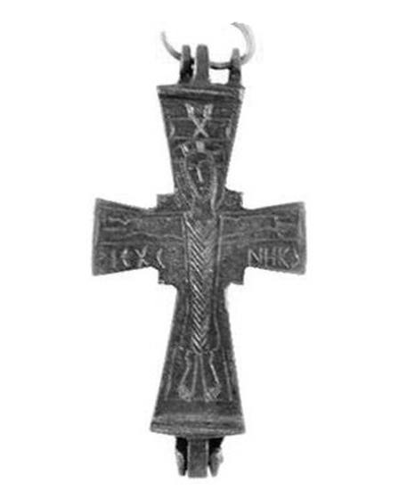
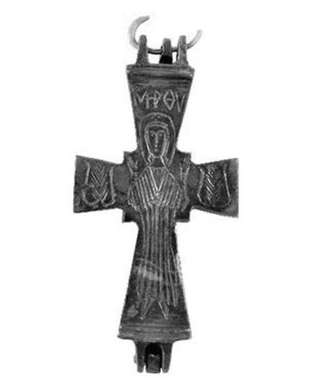

Catalog › CE-0306 · BAL2023-4
Encolpion bivalv de bronz, cat. 4, Muzeul Kuva-yi Milliye Balıkesir
sec. X–XI (901–1100) · loc necunoscut · Muzeul Kuva-yi Milliye din Balıkesir (Balıkesir Kuva-yi Milliye Müzesi), Turcia, inv. Müze En. No 2013/2758
double-sided reliquary cross (enkolpion), bronz; c. X–XI (901–1100); find spot unknown; kept at Muzeul Kuva-yi Milliye din Balıkesir (Balıkesir Kuva-yi Milliye Müzesi), Turcia.




Identificare
- Categorie
- Encolpion bivalv (relicvar)
- Material
- Bronz
- Tehnică
- Gravare (incizie)
- Stare
- Întreagă
- Dimensiuni
- Î 75 × L 37 × Gr 10 mm
Iconografie
- Avers
- Răstignirea (Hristos în colobium)
- Descriere avers
- Hristos răstignit, în colobium, cu capul cu nimb; deasupra capului partea de sus a crucii; deasupra, pe o placă orizontală, un X; sub brațele lui, de la stânga la dreapta, monograma ICXC NHKA; capul ușor căzut spre stânga. Punctul de întâlnire al brațelor crucii iese în afară.
- Revers
- Maica Domnului Orantă
- Descriere revers
- Maica Domnului orantă, cu nimb, în stikharion și maphorion, cu maphorionul marcat cu linii verticale; de o parte și de alta a umerilor un chiparos stilizat; deasupra capului inscripția MH ϴV.
- Inscripții
- ΙC XC NHKA [Ἰησοῦς Χριστὸς νικᾷ]; MH ϴV [Μήτηρ Θεοῦ]
- Limba
- Greacă
Datare și atribuire
- Datare
- sec. X–XI (901–1100)
- Centru
- Necunoscut
- Tipologie
- Pitarakis 2006, forma tip I; Sıddıki 2023: Răstignirea tip I; Maica Domnului Blachernitissa tip II a
Descoperire
- Context
- Colecție (fără context)
- Coordonate
- 39.6484° N, 27.8826° E
- Precizia locului
- Loc de păstrare (loc de descoperire incert)
Păstrare și referințe
- Colecție
- Muzeul Kuva-yi Milliye din Balıkesir (Balıkesir Kuva-yi Milliye Müzesi), Turcia
- Nr. inventar
- Müze En. No 2013/2758
- Bibliografie
- F. İ. Sıddıki, Balıkesir Kuva-yi Milliye Müzesi Koleksiyonundaki Bizans Dönemi Bronz Röliker Haçlar, „Art-Sanat”, 20, 2023, p. 561–588 [Sıddıki 2023], p. 575, cat. nr. 4, reprodusă la G. 7–8 (p. 575). DOI: 10.26650/artsanat.2023.20.1290116. Acces liber (CC BY-NC 4.0).
- Figura
- G. 7 (fotografie), G. 8 (desen)
- Planșe
- Sıddıki 2023, p. 575
- Analogii
- Erimtan, Ankara (Koçyiğit 2018, p. 118, cat. 7); Muzeul Sadberk Hanım 11554-ARK388 (Bilgili 2007, p. 271); Antalya 2.41.73 (Pitarakis 2006, p. 363, cat. 241); Isparta 6-10-7 (Çetin 2015, p. 18–19); Boğazköy (Böhlendorf-Arslan 2012, p. 358, fig. 6.9); colecția G. Pilichos, Grecia, nr. 4 (Koutsikou 2002, p. 194, cat. 216); Etampes, colecție privată (Pitarakis 2006, p. 262, cat. 236); Muzeul Național Varna IV1619 (Pitarakis 2006, p. 264, cat. 247); aproximativ ca formă: Atena, Canellopoulos 1058 (Pitarakis 2006, p. 261, cat. 234)
- Observații
- Datare după Sıddıki: sec. X–XI. Intrată în muzeu prin achiziție, 2013; locul descoperirii nu se cunoaște (piesele au fost cumpărate din Balıkesir și împrejurimi). Dimensiuni date în sursă (cm): înălțime 7.5, lățime 3.7, grosime 1.0. Piesa e „sănătoasă”; inelul de pe brațul de sus s-a rupt. Se deosebește de celelalte prin încrucișarea brațelor ieșită în afară. La concluzii autorul dă pentru a doua parte a inscripției de la Răstignire forma „NHKC”, iar în catalog „NHKA”. Locul descoperirii nu e cunoscut cu precizie; punctul de pe hartă marchează locul de păstrare (Muzeul Kuva-yi Milliye din Balıkesir), nu locul descoperirii. Coordonate: nu sunt date în sursă.
Citare: Corpus Encolpiorum, CE-0306, Encolpion bivalv de bronz, cat. 4, Muzeul Kuva-yi Milliye Balıkesir, https://vitaliejosanu1979-ux.github.io/primul-meu-proiect/piese/BAL2023-4/ (accesat 2026-10-17).